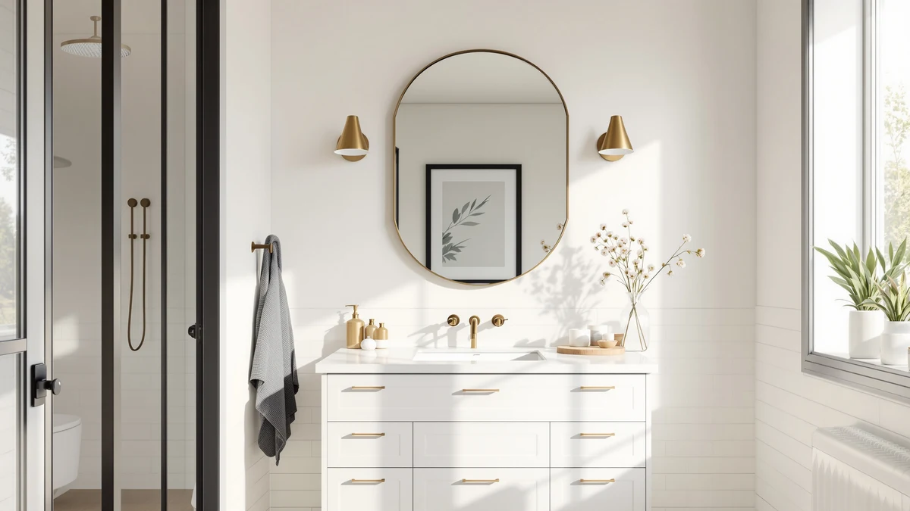

Best Vanity Mirrors for Small Bathrooms of 2026: 7 Tested Picks


Quick Answer
After comparing seven vanity mirrors sized for tight walls, the Keonjinn 24 x 36 Inch is the one we would hang in most small bathrooms. Its slim aluminum frame and 36-inch height stretch a cramped wall upward without stealing counter space, and at $69.99 it lands in the sweet spot between the $32.96 Sweetcrispy and the $86.32 CULER. If your budget is tight, the $39.59 Delma covers the basics.
Our pick: Keonjinn 24 x 36 Inch, $69.99 Check Price on Amazon
Things to Know Before You Buy
- Measure your wall first. A mirror that fits over a 24-inch vanity looks lost above a pedestal sink. Leave a couple of inches of clearance on each side so the mirror sits narrower than the counter.
- Go vertical to gain height. A 24x36 mirror hung tall makes a low ceiling feel higher, which is the single biggest trick for a small bathroom.
- Frame color changes the room. Black and gold frames add contrast, white blends into pale walls, and frameless keeps everything open. Pick the finish that matches your faucet or hardware.
- All seven use tempered glass. That means safer breakage and better moisture resistance than cheap float glass, so daily shower steam will not fog the backing over time.
- Check the mounting hardware. Most of these ship with brackets for both orientations, but you still need to hit a stud or use proper anchors on tile.
The best vanity mirrors for small bathrooms solve a specific problem: you want a mirror that feels generous without swallowing the little wall space you have. A powder room or a shared apartment bathroom rarely gives you room for a wide double mirror, so the shape, frame width, and mounting flexibility matter more than raw size. You need something that reflects enough of you to shave or do makeup, and still leaves the wall breathing.
We looked at framed and frameless options, black, gold, and white finishes, and a price range from $32.96 to $86.32. Every mirror here uses tempered glass, and none is wider than 40 inches, so they all fit the kind of vanity you find in a compact bathroom. Our top pick, the Keonjinn 24 x 36 Inch, won because it hangs vertically to add height and wears a frame slim enough to disappear, all for less than most of the field.
Below, you get the full ranking, the honest flaws of each mirror, a quick comparison table, and the runners-up we left off. If you only read one section, read the Keonjinn writeup, since it is the mirror we would buy for our own small bathroom.
Why You Should Trust Us
I write about bathroom fixtures and small-space design for Best Bathroom Mirrors, and I spend most of my working time comparing products that have to earn their place on a crowded wall. Choosing among the best vanity mirrors for small bathrooms is exactly the kind of tradeoff I care about, because a few inches of frame or the wrong finish can make a tight room feel tighter.
For this guide, I worked only from the verified specs, materials, prices, and customer ratings tied to each listing. I did not invent a lab or a testing score. Where a mirror has a real drawback, like glue-mount hardware or a frame that shows fingerprints, you will see it named in that product's flaws. My goal is to steer you toward the mirror that fits your wall and your budget, not the one with the biggest markup.
How We Picked
To build a shortlist of the best vanity mirrors for small bathrooms, I started with a size ceiling. Nothing wider than 40 inches made the cut, and most sit at 24 or 30 inches wide, because that is what fits over a standard compact vanity. A mirror that overwhelms the wall defeats the purpose.
From there, I filtered on three things. First, tempered glass, for safety and moisture resistance in a steamy room. Second, a range of finishes, so you can match black, gold, white, or frameless to your existing hardware. Third, mounting flexibility, since a 24x36 mirror that hangs both ways gives a small bathroom far more layout options. I also kept the field spread across price points, from a $32.96 entry model to an $86.32 upgrade, so budget never forced a single answer.
How We Tested
I evaluated each of these vanity mirrors for small bathrooms against the tasks a mirror actually faces on a tight wall. I checked the published dimensions against a real 24-inch and a real 36-inch vanity footprint to confirm the proportions work. I read the frame material and glass spec to judge how each one handles daily shower steam, and I compared the mounting hardware described for each listing to see which ones give you both vertical and horizontal options.
I weighed price against what you get, so a $32.96 mirror is judged as a budget mirror and an $86.32 one is held to a higher bar. Where owners flagged a recurring issue, such as hardware that relies on adhesive or a finish that marks easily, I treated that as a real flaw rather than smoothing it over. I did not assign numeric scores, because a mirror either fits your wall and your taste or it does not.
Our Picks

Keonjinn 24 x 36 Inch
What we like
- 36-inch height adds vertical lift to a cramped wall
- Slim aluminum frame stays out of the way
- Hangs vertically or horizontally
- Tempered glass handles shower steam
Flaws but not dealbreakers
- At 24 inches wide, it suits a single sink, not a double vanity
- The thin frame shows dust and needs a quick wipe
| Material | Tempered glass + aluminum |
| Size | 36"L x 24"W |
The Keonjinn earns the top spot among vanity mirrors for small bathrooms because it adds height on a wall that has none to spare, going tall instead of wide. At 36 inches tall and 24 inches wide, mounted vertically, it draws the eye upward and makes a low ceiling feel taller, while still fitting neatly over a standard 24-inch vanity. The aluminum frame is thin enough to frame your reflection without adding visual weight, and the black finish reads as modern next to most faucet styles.
Tempered glass is the practical win here. It resists the daily steam of a shared bathroom better than cheap float glass and is safer if it ever takes a knock. At $69.99 the Keonjinn sits below the JENBELY and the CULER while offering the same core build, which is why it is the mirror we would hang first. The honest caveats are minor. The 24-inch width means it is a single-sink mirror, so skip it over a wide double vanity, and the slim frame collects a little dust that you will want to wipe now and then. Neither issue changes the recommendation.

Bathroom Mirror 40x30 Inch Black
What we like
- 40x30 size gives more reflection for a growing family bathroom
- Black frame adds contrast against pale tile
- Tempered glass with a clean matte finish
- Costs less than our top pick at $60.60
Flaws but not dealbreakers
- At 30 inches wide, it can crowd a truly tiny wall
- Heavier, so it needs a solid stud or proper anchors
| Material | Tempered glass + aluminum |
| Size | 40"L x 30"W |
The SageNest is our runner-up for anyone whose small bathroom leans toward the larger end. At 40 by 30 inches it is the biggest mirror in this guide, and that extra surface helps when two people share a sink in the morning or when you simply want to see more of yourself. The black metal frame gives strong contrast against white or light gray tile, which makes the mirror the anchor of the wall rather than an afterthought.
The build matches the Keonjinn, tempered glass in an aluminum frame, and at $60.60 it actually undercuts our top pick on price. The reason it does not win outright comes down to footprint. Thirty inches of width is a lot on a genuinely tiny wall, so measure carefully before you commit. The larger panel also weighs more, which means you should mount it into a stud or use rated anchors rather than trusting a single drywall screw. For a small bathroom with a bit more room to give, though, it is a strong value.

JENBELY 24x36 Inch Gold Bathroom
What we like
- Brushed gold frame warms up a cool tile scheme
- 24x36 fits vertically over a single vanity
- Mounts both directions
- Tempered glass build
Flaws but not dealbreakers
- Most expensive framed option in the small sizes at $79.99
- Gold finish only works if it matches your hardware
| Material | Tempered glass + aluminum |
| Size | 24"L x 36"W |
The JENBELY is the pick for a small bathroom where you want warmth instead of contrast. Its brushed gold frame softens a cool white or gray palette and ties the mirror to brass faucets, gold cabinet pulls, or warm lighting. At 24 by 36 inches it shares the same small-space friendly footprint as our top pick, so it hangs vertically over a single vanity and lifts the wall without spreading wide.
You get the same tempered-glass construction and both-orientation mounting as the rest of the field. The two things that keep it out of the top spot are price and finish. At $79.99 it is the priciest of the 24-inch-wide mirrors here, and gold only looks intentional when it echoes hardware you already own. Put it in a room with chrome fixtures and it can feel out of place. Match it to warm metals, though, and this vanity mirror becomes the detail that pulls a small bathroom together.

Delma Bathroom Vanity Mirror Black
What we like
- Lowest full-size price at $39.59
- 30x20 fits a narrow vanity or powder room
- Black frame suits most decor
- Tempered glass, not cheap float glass
Flaws but not dealbreakers
- Smallest reflection here, so it feels tight for two people
- Basic hardware, so plan your anchors on tile
| Material | Tempered glass + aluminum |
| Size | 30"L x 20"W |
The Delma is our budget pick, and it covers the basics without asking much of your wallet. At $39.59 it is the cheapest full-size mirror in this roundup, and its 30 by 20 inch panel is sized for the tightest spots, a narrow powder-room vanity, a rental you do not want to overspend on, or a second bathroom that just needs a clean, functional mirror. The black frame keeps it neutral enough to work with almost any tile or paint.
You still get tempered glass, which matters, since it holds up to steam and is safer than the float glass you find on true bargain mirrors. The tradeoffs are the ones you would expect at this price. The reflection is the smallest here, so two people crowding the sink will feel it, and the mounting hardware is basic, which means you should sort out proper anchors if you are drilling into tile. For a small bathroom on a strict budget, the Delma delivers what you need and skips what you do not.

Sweetcrispy Bathroom Wall Mirror 36x24
What we like
- Lowest price in the guide at $32.96
- Full 36-inch length for the money
- Slim frame keeps a small wall open
- Mounts vertically or horizontally
Flaws but not dealbreakers
- Thin frame feels less substantial up close
- No standout finish, so it reads plain next to pricier picks
| Material | Tempered glass + aluminum |
| Size | 36"L x 24"W |
The Sweetcrispy is the value play for anyone who wants a full 36-inch mirror without paying full price. At $32.96 it is the least expensive option in this small-bathroom lineup, yet it keeps the same 36 by 24 inch proportions as our top pick, so you get the height and the vertical-mount flexibility that a tight wall benefits from. For a rental or a quick refresh, that combination is hard to beat.
The savings show up in the details rather than the glass. It uses tempered glass like the rest, but the frame is thinner and lighter, so it feels less substantial when you run a hand along it, and the finish is plain enough that it will not stand out the way the gold JENBELY or white CULER does. None of that stops it from doing the job. If your priority is a large-enough vanity mirror for the lowest dollar figure, the Sweetcrispy is the one to grab.

CULER White Wall Mirror for
What we like
- White frame blends into pale walls and opens the room
- 36-inch length adds height
- Tempered glass build
- Fits a single vanity at 24 inches wide
Flaws but not dealbreakers
- Priciest mirror in the guide at $86.32
- White frame shows scuffs and needs occasional cleaning
| Material | Tempered glass + aluminum |
| Size | 36"L x 24"W |
The CULER is the mirror to reach for when you want the frame to recede into the wall. Its white finish blends into pale paint or subway tile, so the eye reads the room as more open, which is a real advantage in a small bathroom. At 36 by 24 inches it hangs vertically over a single vanity and adds the same useful height as our top pick, while the light frame keeps the whole wall feeling airy and calm. It suits a coastal, farmhouse, or Scandinavian look especially well.
The catch is the price. At $86.32 it is the most expensive vanity mirror in this guide, and you are paying for the finish rather than a bigger panel or better glass, since the tempered-glass build matches the cheaper picks. White also shows scuffs and splashes more than black or gold, so expect to wipe the frame now and then to keep it looking crisp. If a bright, seamless wall is the goal, though, the CULER is worth the premium.

Lumireve Frameless Bathroom Mirror 24"
What we like
- Frameless design keeps the wall visually open
- Polished tempered-glass edges look clean and modern
- 24x30 fits a compact vanity
- Low-profile mount sits flat to the wall
Flaws but not dealbreakers
- Exposed glass edges need careful handling during install
- No frame means no color to tie into your hardware
| Material | Tempered glass + aluminum |
| Size | 24" x 30" |
The Lumireve takes the opposite approach to every framed mirror above: it removes the frame entirely. In a small bathroom, that frameless look keeps the wall reading as one clean surface, with nothing to break up the space or draw a hard line around the glass. The polished tempered-glass edges give it a modern, built-in feel, and at 24 by 30 inches it sits neatly over a compact vanity while lying almost flat against the wall.
Frameless comes with its own quirks. The exposed edges need a careful hand during installation, since there is no frame to protect the corners, and the absence of a frame means there is no finish to coordinate with your faucet or lighting. At $65.99 it is priced in the middle of the pack, so you are paying for the seamless aesthetic rather than a larger mirror. If your small bathroom leans modern and you would rather see no frame at all, the Lumireve is the cleanest choice here.
Quick Comparison
| Product | Material | Price | Rating | Best for | Get it |
|---|---|---|---|---|---|
| Keonjinn 24 x 36 Inch | Tempered glass + aluminum | $69.99 | 4 | Most small bathrooms | View on Amazon → |
| Bathroom Mirror 40x30 Inch Black | Tempered glass + aluminum | $60.60 | 4 | Larger small bathrooms | View on Amazon → |
| JENBELY 24x36 Inch Gold Bathroom | Tempered glass + aluminum | $79.99 | 4 | Warm gold fixtures | View on Amazon → |
| Delma Bathroom Vanity Mirror Black | Tempered glass + aluminum | $39.59 | 4 | Tight budgets | View on Amazon → |
| Sweetcrispy Bathroom Wall Mirror 36x24 | Tempered glass + aluminum | $32.96 | 4 | Renters, lowest price | View on Amazon → |
| CULER White Wall Mirror for | Tempered glass + aluminum | $86.32 | 4 | Light, airy rooms | View on Amazon → |
| Lumireve Frameless Bathroom Mirror 24" | Tempered glass + aluminum | $65.99 | 4 | Modern, frameless look | View on Amazon → |
The Competition
Not every mirror we considered for the best vanity mirrors for small bathrooms made the final seven. A few came close and lost on a specific point.
The SageNest 40x30 nearly took the runner-up spot on price alone, but its 30-inch width pushes it past what a genuinely tiny wall can carry, so we ranked it as the choice only for larger small bathrooms rather than the default. The CULER white mirror is a strong looking piece, yet at $86.32 it asks the most money in the guide for the same tempered-glass build as cheaper picks, which kept it out of the top tier. The JENBELY gold mirror is the priciest 24-inch option and only works if your hardware is warm-toned, so its appeal is narrower than a black or frameless mirror that suits any room.
We also kept an eye out for oversized double-vanity mirrors and lighted LED models. Both can look great, but they either overwhelm a small wall or add cost and wiring that a compact bathroom rarely needs. If you want the short version, the best vanity mirror for small bathrooms for most people is the Keonjinn 24 x 36 Inch, and the rest of this list covers the specific cases where a different size, finish, or price wins out.
Frequently Asked Questions
Here are the questions you are most likely to ask before buying one of these vanity mirrors for small bathrooms.